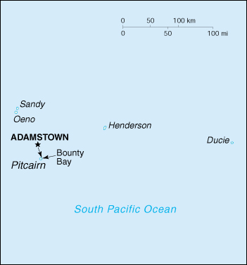

(overseas territory of the UK)
|
Pitcairn Islands (overseas territory of the UK) |
|
| Introduction Geography People Government Economy Communications Transportation Military Transnational Issues | ||
|  | ||
| Pitcairn Islands | Introduction | Top of Page |
| Background: | Pitcairn Island was discovered in 1767 by the British and settled in 1790 by the Bounty mutineers and their Tahitian companions. Pitcairn was the first Pacific island to become a British colony (in 1838) and today remains the last vestige of that empire in the South Pacific. Outmigration, primarily to New Zealand, has thinned the population from a peak of 233 in 1937 to about 50 today. |
| Pitcairn Islands | Geography | Top of Page |
| Location: | Oceania, islands in the South Pacific Ocean, about one-half of the way from Peru to New Zealand |
| Geographic coordinates: | 25 04 S, 130 06 W |
| Map references: | Oceania |
| Area: |
total:
47 sq km
land: 47 sq km water: 0 sq km |
| Area - comparative: | about 0.3 times the size of Washington, DC |
| Land boundaries: | 0 km |
| Coastline: | 51 km |
| Maritime claims: |
exclusive economic zone:
200 NM
territorial sea: 3 NM |
| Climate: | tropical, hot, humid; modified by southeast trade winds; rainy season (November to March) |
| Terrain: | rugged volcanic formation; rocky coastline with cliffs |
| Elevation extremes: |
lowest point:
Pacific Ocean 0 m
highest point: Pawala Valley Ridge 347 m |
| Natural resources: |
miro trees (used for handicrafts), fish
note: manganese, iron, copper, gold, silver, and zinc have been discovered offshore |
| Land use: |
arable land:
NA%
permanent crops: NA% permanent pastures: NA% forests and woodland: NA% other: NA% |
| Irrigated land: | NA sq km |
| Natural hazards: | typhoons (especially November to March) |
| Environment - current issues: | deforestation (only a small portion of the original forest remains because of burning and clearing for settlement) |
| Pitcairn Islands | People | Top of Page |
| Population: | 47 (July 2001 est.) |
| Age structure: |
0-14 years:
NA%
15-64 years: NA% 65 years and over: NA% |
| Population growth rate: | -2.08% (2001 est.) |
| Birth rate: | NA births/1,000 population |
| Death rate: | NA deaths/1,000 population |
| Net migration rate: | NA migrant(s)/1,000 population |
| Infant mortality rate: | NA deaths/1,000 live births |
| Life expectancy at birth: |
total population:
NA years
male: NA years female: NA years |
| Total fertility rate: | NA children born/woman |
| HIV/AIDS - adult prevalence rate: | NA% |
| HIV/AIDS - people living with HIV/AIDS: | NA |
| HIV/AIDS - deaths: | NA |
| Nationality: |
noun:
Pitcairn Islander(s)
adjective: Pitcairn Islander |
| Ethnic groups: | descendants of the Bounty mutineers and their Tahitian wives |
| Religions: | Seventh-Day Adventist 100% |
| Languages: | English (official), Pitcairnese (mixture of an 18th century English dialect and a Tahitian dialect) |
| Pitcairn Islands | Government | Top of Page |
| Country name: |
conventional long form:
Pitcairn, Henderson, Ducie, and Oeno Islands
conventional short form: Pitcairn Islands |
| Dependency status: | overseas territory of the UK |
| Government type: | NA |
| Capital: | Adamstown |
| Administrative divisions: | none (overseas territory of the UK) |
| Independence: | none (overseas territory of the UK) |
| National holiday: | Birthday of Queen ELIZABETH II, second Saturday in June (1926) |
| Constitution: | 1838; reformed 1904 with additional reforms in 1940; further refined by the Local Government Ordinance of 1964 |
| Legal system: | local island by-laws |
| Suffrage: | 18 years of age; universal with three years residency |
| Executive branch: |
chief of state:
Queen ELIZABETH II (since 6 February 1952), represented by UK High Commissioner to New Zealand and Governor (nonresident) of the Pitcairn Islands Martin WILLIAMS (since NA May 1998); Commissioner (nonresident) Leon SALT (since NA; is the liaison person between the governor and the Island Council)
head of government: Island Magistrate and Chairman of the Island Council Jay WARREN (since NA) cabinet: NA elections: the monarch is hereditary; high commissioner and commissioner appointed by the monarch; island magistrate elected every three years in December by popular vote for a three-year term; last election held NA December 1999 (next to be held NA December 2002) election results: Lea BROWN elected island magistrate; percent of vote - NA% |
| Legislative branch: |
unicameral Island Council (10 seats - 6 elected by popular vote, 1 appointed by the 6 elected members, 2 appointed by the governor, and 1 seat for the Island Secretary; members serve one-year terms)
elections: take place each December; last held NA December 2000 (next to be held NA December 2001) election results: percent of vote - NA%; seats - all independents |
| Judicial branch: | Island Court (island magistrate presides over the court and is elected every three years) |
| Political parties and leaders: | none |
| Political pressure groups and leaders: | none |
| International organization participation: | SPC |
| Diplomatic representation in the US: | none (overseas territory of the UK) |
| Diplomatic representation from the US: | none (overseas territory of the UK) |
| Flag description: | blue with the flag of the UK in the upper hoist-side quadrant and the Pitcairn Islander coat of arms centered on the outer half of the flag; the coat of arms is yellow, green, and light blue with a shield featuring a yellow anchor |
| Pitcairn Islands | Economy | Top of Page |
| Economy - overview: | The inhabitants of this tiny economy exist on fishing, subsistence farming, handicrafts, and postage stamps. The fertile soil of the valleys produces a wide variety of fruits and vegetables, including citrus, sugarcane, watermelons, bananas, yams, and beans. Bartering is an important part of the economy. The major sources of revenue are the sale of postage stamps to collectors and the sale of handicrafts to passing ships. |
| GDP: | purchasing power parity - $NA |
| GDP - real growth rate: | NA% |
| GDP - per capita: | purchasing power parity - $NA |
| GDP - composition by sector: |
agriculture:
NA%
industry: NA% services: NA% |
| Population below poverty line: | NA% |
| Household income or consumption by percentage share: |
lowest 10%:
NA%
highest 10%: NA% |
| Inflation rate (consumer prices): | NA% |
| Labor force: | 12 able-bodied men (1997) |
| Labor force - by occupation: | no business community in the usual sense; some public works; subsistence farming and fishing |
| Unemployment rate: | NA% |
| Budget: |
revenues:
$729,884
expenditures: $878,119, including capital expenditures of $NA (FY94/95 est.) |
| Industries: | postage stamps, handicrafts |
| Industrial production growth rate: | NA% |
| Electricity - production: | NA kWh; note - electric power is provided by a small diesel-powered generator |
| Electricity - consumption: | NA kWh |
| Agriculture - products: | wide variety of fruits and vegetables, goats, chickens |
| Exports: | $NA |
| Exports - commodities: | fruits, vegetables, curios, stamps |
| Exports - partners: | NA |
| Imports: | $NA |
| Imports - commodities: | fuel oil, machinery, building materials, flour, sugar, other foodstuffs |
| Imports - partners: | NA |
| Debt - external: | $NA |
| Economic aid - recipient: | $NA |
| Currency: | New Zealand dollar (NZD) |
| Currency code: | NZD |
| Exchange rates: | New Zealand dollars per US dollar - 2.2502 (January 2001), 2.1863 (2000), 1.8886 (1999), 1.8629 (1998), 1.5083 (1997), 1.4543 (1996) |
| Fiscal year: | 1 April - 31 March |
| Pitcairn Islands | Communications | Top of Page |
| Telephones - main lines in use: | 1 (there are 17 telephones on one party line) (1997) |
| Telephone system: |
general assessment:
only party line telephone service is available for this small, closely related community
domestic: party line service only international: radiotelephone |
| Radio broadcast stations: | AM 1, FM 0, shortwave 0 (1998) |
| Radios: | NA |
| Television broadcast stations: | 0 (1997) |
| Televisions: | NA |
| Internet country code: | .pn |
| Internet Service Providers (ISPs): | NA |
| Internet users: | NA |
| Pitcairn Islands | Transportation | Top of Page |
| Railways: | 0 km |
| Highways: |
total:
6.4 km
paved: 0 km unpaved: 6.4 km |
| Waterways: | none |
| Ports and harbors: | Bounty Bay |
| Merchant marine: | none (2000 est.) |
| Airports: | none |
| Pitcairn Islands | Military | Top of Page |
| Military - note: | defense is the responsibility of the UK |
| Pitcairn Islands | Transnational Issues | Top of Page |
| Disputes - international: | none |
{kind=link}
{kind=link}